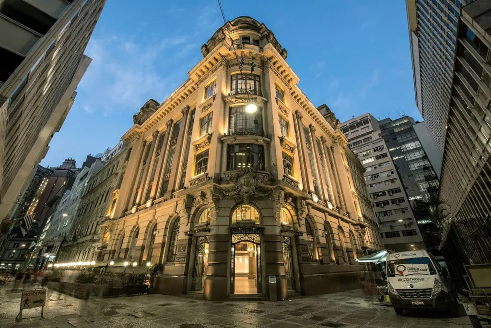

Centro Cultural Banco do Brasil São Paulo
São Paulo, Centro
O Centro Cultural Banco do Brasil São Paulo, também conhecido como CCBB São Paulo, foi inaugurado em 21 de abril de 2001, no centro histórico da cidade.
ConectaSP
São Paulo, Centro
O Centro Cultural Banco do Brasil São Paulo, também conhecido como CCBB São Paulo, foi inaugurado em 21 de abril de 2001, no centro histórico da cidade.

R. Álvares Penteado, 112 - Centro Histórico de São Paulo, São Paulo - SP, 01012-000
de quarta a segunda-feira, das 10h às 18h, e fica fechada às terças-feiras
Até as 18:00h
todos os dias, das 9h às 20h, exceto às terças-feiras, quando permanece fechado.
(11) 4297-0600